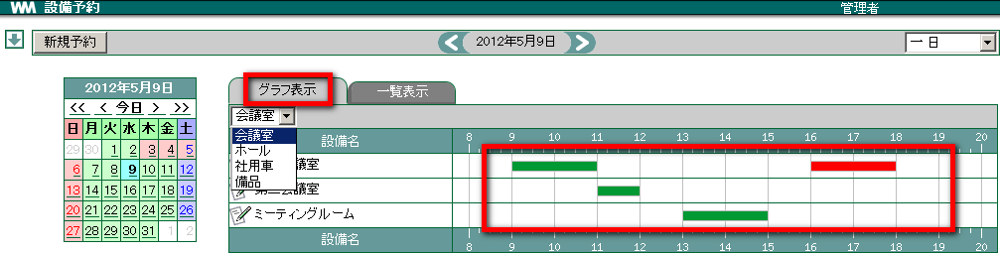
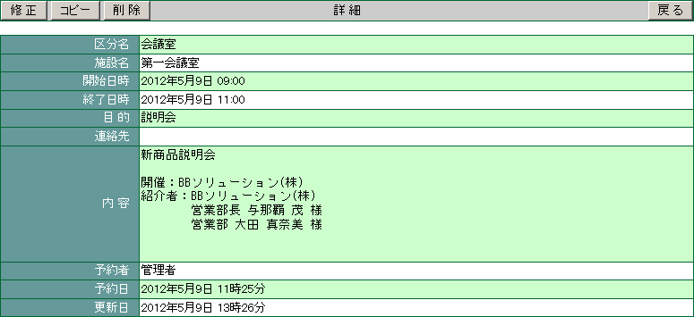
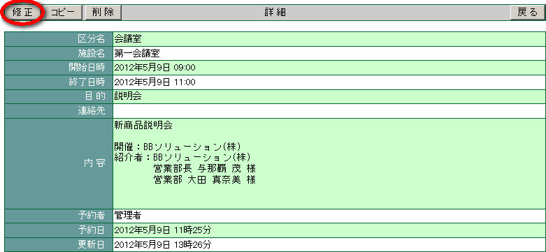
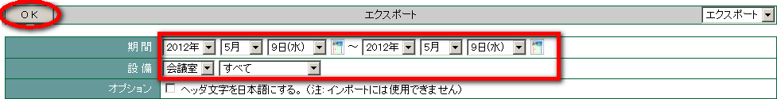
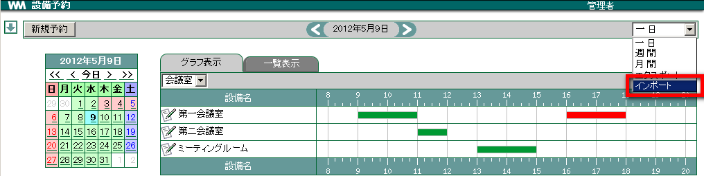

5. 設備予約¶
5.1. 予約状況を確認する¶
設備の予約・使用状況は横棒グラフで視覚的に表示されます。グラフでの表示を切り替えて件名で表示させることもできます。
メニューの
 をクリックします。
をクリックします。日付を確認します。カレンダーまたは < > から予約を確認したい日をクリックします。

設備を選択します。予約を確認したい設備が含まれる設備区分をクリックします。

[グラフ表示] の場合は確認したい予約の横棒グラフ上でクリックします。

［一覧表示］の場合は確認したい予約の件名上でクリックします。

設備の予約状況の詳細が表示されたら、 戻る をクリックします。

5.1.2. 設備の詳細を確認する¶
設備名 をクリックすると、各設備の場所・収容人数・イメージ(写真) 等を確認することができます。
5.2. 設備を予約する¶
設備を新規に予約しましょう。既に予約が入っている時間帯には、予約を取ることが出来ません。
5.2.1. 簡単予約¶
一日の設備予約状況を確認しながら、簡単に設備予約を行うことができます。
メニューの
をクリックします。日付を選択します。カレンダーまたは < > から予約したい日を設定します。
設備を選択します。予約したい設備が含まれる設備区分をクリックします。
簡単予約画面にて入力を行い、 OK をクリックします。 [1]

5.2.2. スケジュールの同時登録¶
メニューの
をクリックします。新規予約 をクリックします。

各項目を選択・入力し、スケジュール登録画面の [予約登録] を する を選択します。

スケジュール登録画面が表示されます。各項目を入力し、 OK をクリックします。

5.2.3. 定期的な予定を一度に登録する¶
「毎月10日」「毎週水曜日」など、定期的なスケジュールで設備を一度に登録することができます。
メニューの
をクリックします。新規予約 をクリックします。
定期予定 をクリック、各項目を入力して OK をクリックします。


5.2.5. 空き時間を検索する¶
設備の空いている時間を検索し、そのまま設備を予約することができます。
メニューの
をクリックします。新規予約 をクリックします。
新規予約画面で予約したい日付を設定し 空き検索 をクリックします。

空き検索結果、「? 件の空き設備が見つかりました。」と表示されます。プルダウンメニューに空き設備が表示されますので、その中から使用する設備名を選択します。

5.3. 予約した内容を修正する¶
登録した内容は後から修正できます。設備予約を修正できるのは、設備予約を登録したユーザーと管理者のみです。
メニューの
をクリックします。カレンダーまたは < > から予約を修正したい日をクリックします。
予約を修正したい設備が含まれる設備区分を選択します。
[グラフ表示] の場合は修正したい予約の横棒グラフ上でクリックします。
[一覧表示] の場合は修正したい予約の件名上でクリックします。
設備の予約状況の詳細が表示されたら、 修正 をクリックします。

内容を修正し OK をクリックします。
5.4. 予約を削除する¶
予約した内容を削除しましょう。内容を削除できるのは、設備予約を登録したユーザーと管理者のみです。
メニューの
をクリックします。カレンダーまたは < > から予約を削除したい日をクリックします。
予約を削除したい設備が含まれる設備区分を選択します。
[グラフ表示] の場合は削除したい予約の横棒グラフ上でクリックします。
[一覧表示] の場合は削除したい予約の件名上でクリックします。
設備の予約状況の詳細が表示されたら、 削除 をクリックします。

確認メッセージが表示されたら、 OK をクリックします。
5.5. 予約をコピーする¶
予約した内容をコピーして新たに予約をすることができます。内容をコピーできるのは、一覧参照権限以上を持つユーザーと管理者です。
メニューの
をクリックします。カレンダーまたは < > から予約を削除したい日をクリックします。
予約を削除したい設備が含まれる設備区分を選択します。
[グラフ表示] の場合は削除したい予約の横棒グラフ上でクリックします。
[一覧表示] の場合は削除したい予約の件名上でクリックします。
設備の予約状況の詳細が表示されたら、 コピー をクリックします。

日時・内容を修正し OK をクリックします。
5.6. 設備予約をエクスポートする¶
設備予約を CSV ファイルに書き出すことができます。
メニューの
をクリックします。右上のプルダウンメニューから エクスポート を選択します。

設備予約を書き出したい設備、期間を指定し OK をクリックします。 [2]

CSV ファイルが出力されます。
5.7. 設備予約をインポートする¶
表計算ソフト等で編集した CSV ファイルを取り込むことができます。
メニューの
をクリックします。右上のプルダウンメニューから インポート を選択します。

参照 をクリックし、取り込む CSV ファイルを選択します。
OK をクリックします。 [3]

設備予約がインポートされていることを確認します。
5.7.1. CSV ファイルの書き方¶
CSV ファイルを記載する場合は、一度エクスポートを実行した CSV ファイル (export.csv) をご参照ください。
| インポートに必要なヘッダーの説明 | ||
|---|---|---|
| division_code | 設備区分コード | 設備区分設定で設定したコード(半角数字) |
| division_name | 設備区分名 | |
| plant_code | 設備コード | 設備設定で設定したコード(半角数字) |
| plant_name | 設備名 | |
| reserve_start | 開始日時 | 「西暦/月/日 時:分」まで入力(半角) |
| reserve_end | 終了日時 | 「西暦/月/日 時:分」まで入力(半角) |
| purpose | 目的 | |
| extensioin | 連絡先 | |
| note | 内容 | |
| rsv_reg_name | 予約者 | |
| reg_date | 予約日 | 「西暦/月/日 時:分」まで入力(半角) |
| up_date | 更新日 | 「西暦/月/日 時:分」まで入力(半角) |
| pattern | 登録パターン | パターンの説明 を参照 |
| pattern_parm | 登録パターンパラメータ | パターンの説明 を参照 |
| exception_date | 例外日 | 「西暦/月/日」を入力
複数ある場合は「,」で区切る(半角)
|
Warning
日本語のヘッダー文字が含まれた CSV データはインポートできません。
5.7.1.1. パターンの説明¶
| パターン | pattern | pattern_param (例) |
|---|---|---|
| 毎日 | 1 | なし |
| 毎週~曜日 | 2 | 月, 火の場合 「,1,2,,,,,」
日, 金, 土の場合 「0,,,,,5,6」
|
| 毎月~日 | 3 | 毎月3日の場合 「3」
毎月10日の場合 「10」
|
| 毎月第~曜日 | 4 | 第3水曜日の場合 「3-3」
第1土曜日の場合 「1-6」
|
Note
曜日の数字は以下の通りになります。
脚注
| [1] | 簡単予約は、「 一日 」表示からのみ登録可能です。 |
| [2] | ヘッダ文字を日本語にする にチェックを入れると、書き出される項目名を日本語で表示することができます。 |
| [3] | [オプション] の テストを行う にチェックをつけて OK ボタンをクリックすると、CSVファイルのテストを行うことができます。(チェックがつけられている場合は、データ登録はされません) |